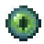

Networking: pages
Networking
Bridges and links
The Network Bridge that joins two places at any distance or across dimensions, the Link Card and everything it pairs, the Point-to-Point Link, and the Relay Antenna.
On this page
These are the ways to reach further than a cable goes. A Network Bridge pair joins two places into one network, however far apart. A Point-to-Point Link passes one thing straight across. A Relay Antenna gives Handheld Terminals coverage. And the Link Card is the tool that pairs nearly everything.
Network Bridge#
Two paired  Network Bridges join their networks as if a cable of
Network Bridges join their networks as if a cable of reach.bridgeLanes (default 32) lanes ran between them: at any distance, and across dimensions while reach.bridgeCrossDimension (default true). Whatever is cabled to the far Bridge becomes part of the near Bridge's network: the same storage, lanes and power.

encodedlogistics:network_bridge
- Placing: it faces you. Cables connect on every side except the front, which is its optical port.
- Cost: it uses no lanes itself and drains
reach.bridgeDrain(default 8) FE/t. - Pairing: sneak-use a
 Link Card on one Bridge, then use the card on the other. Pairing replaces any old partners. It fails on the same Bridge, or across dimensions while cross-dimension bridging is off.
Link Card on one Bridge, then use the card on the other. Pairing replaces any old partners. It fails on the same Bridge, or across dimensions while cross-dimension bridging is off. - Both ends must be loaded for the link to carry anything. With
reach.bridgeChunkLoading(default false) turned on, a linked Bridge keeps its own chunk loaded. - Upkeep: every half second a Bridge checks its partner still points back to it. One whose partner was broken or paired elsewhere unlinks once its chunk is loaded.
Its look shows its state: unlinked (amber), linked and idle, or linked and active (lanes crossing; the lens pulses). Right-click it for its screen: a status light and line (linked, not linked, partner offline), the partner's position and dimension, and a 32-segment meter of the lanes crossing.
A network has one controller structure. A Bridge joins places into one network, so put the controller on one side only.
Screenshot needed
A Network Bridge in its linked and active state with the lens glowing, a network cable into its side, the front optical port facing the camera
docs/site-src/images/networking/network-bridge.png · 1600x900
The Link Card#
The  Link Card stores one end of a connection so you can carry it to the other end.
Link Card stores one end of a connection so you can carry it to the other end.
encodedlogistics:link_card
The pattern is always the same: sneak-use the card on the first thing to store it, then use (without sneaking) on the second to pair, link or assign. Blank cards stack; writing one takes a single card off the stack, and a written card doesn't stack. Sneak-use a card in the air to clear it. Its tooltip says what it holds.
| Store it on (sneak-use) | Then use it on | Result |
|---|---|---|
| A Network Bridge | Another Network Bridge | The two are paired |
| A Point-to-Point Link | A Point-to-Point Link of the same type and opposite direction | They're paired (below) |
| A Segment Isolator half | A switch's unit in an open rack | The rack links that segment (Switches) |
| A Segment Isolator half, or any block of a network | A Router's unit in an open rack | The Router links that network (Routers) |
| A Segment Isolator half, or any block of a network | A Trunk Port | It carries that segment (Trunk Port) |
| An Optical Multiplexer (block or rack unit) | Another Optical Multiplexer | They're paired (Optical) |
| An Optical Transport Shelf's unit | Another shelf's unit | They're paired (Chassis) |
| Any block of a network | An Optical Multiplexer | It gets a channel for that network |
| Any block of a network | A Transponder Card in a shelf (aim at it) | It carries that network |
| A Wireless Controller's unit (use, door open) | A Wireless Bridge, Wireless Port, or a Small Wireless Bridge on a machine | It becomes the controller's client (Wireless) |
To store a network, use the card on a cable or device of that network rather than its controller.
Permissions: writing a card needs Build on the network of the thing you click (Rack access for a device in a Server Rack), and applying it needs the same at both ends. Denied, nothing is written or linked, and the action bar says "Access denied: SYSNAME Firewall". See Firewall and security.
Point-to-Point Link#
A  Point-to-Point Link is a cable part that passes one thing straight from an input to one or more outputs, without going through storage. It's covered in full on Cable parts; here is how pairing works.
Point-to-Point Link is a cable part that passes one thing straight from an input to one or more outputs, without going through storage. It's covered in full on Cable parts; here is how pairing works.
encodedlogistics:point_to_point_link
- Mount the two ends. In each one's screen, pick the type (items, fluids, pressurized, energy, redstone or lanes) and set one end to in and the other to out. Both are locked once it's paired.
- Sneak-use a Link Card on one end, then use it on the other.
They must be the same type, opposite directions, and in the same dimension. An output has one input; an input can have many outputs, because the card keeps the input's address: use it on more outputs to add them. Every two seconds an end drops partners that no longer point back. The Unpair button in its screen undoes it.
The lanes type is the one that joins networks: the outputs' cables get reach.p2pLanes (default 8) lanes from the input's network, split evenly between the outputs (at least 1 each). The others move items, fluids, energy or a redstone signal while both ends are on the same running network. A Point-to-Point Link uses no lanes and drains reach.p2pDrain (default 0.5) FE/t.
Relay Antenna#
A  Relay Antenna gives wireless coverage to the Handheld Terminals linked to its network.
Relay Antenna gives wireless coverage to the Handheld Terminals linked to its network.
encodedlogistics:relay_antenna
- Range: a sphere of
reach.relayBaseRange(default 32) blocks around it, plusreach.relayRangePerTransceiver(default 32) blocks for each Optical Transceiver in its four slots. It covers only its own dimension, and only while it's online.
Optical Transceiver in its four slots. It covers only its own dimension, and only while it's online. - Placing: it faces you. Cables connect on every side except the top, where the mast is.
- Cost: one lane, and
reach.relayDrain(default 2) FE/t. The tip of its mast blinks while it's online. - Linking terminals: use a Handheld Terminal on the antenna to link it to the antenna's network.
- Screen: right-click it to see its range, its four transceiver slots, and the players in range who carry a terminal linked to its network, with their distance.
For coverage without a range limit, use a Wireless Controller instead.
Screenshot needed
The Relay Antenna screen with two Optical Transceivers in its slots, the range figure, and one or two players listed with distances
docs/site-src/images/networking/relay-antenna-screen.png · 1280x720
The Optical Transceiver#
The  Optical Transceiver is a component used in many recipes and in several devices' slots: it extends a Relay Antenna's range, raises a Router's rate, gives a SAN its uplinks and fills a Chassis Switch Uplink Card's cages.
Optical Transceiver is a component used in many recipes and in several devices' slots: it extends a Relay Antenna's range, raises a Router's rate, gives a SAN its uplinks and fills a Chassis Switch Uplink Card's cages.
encodedlogistics:optical_transceiver